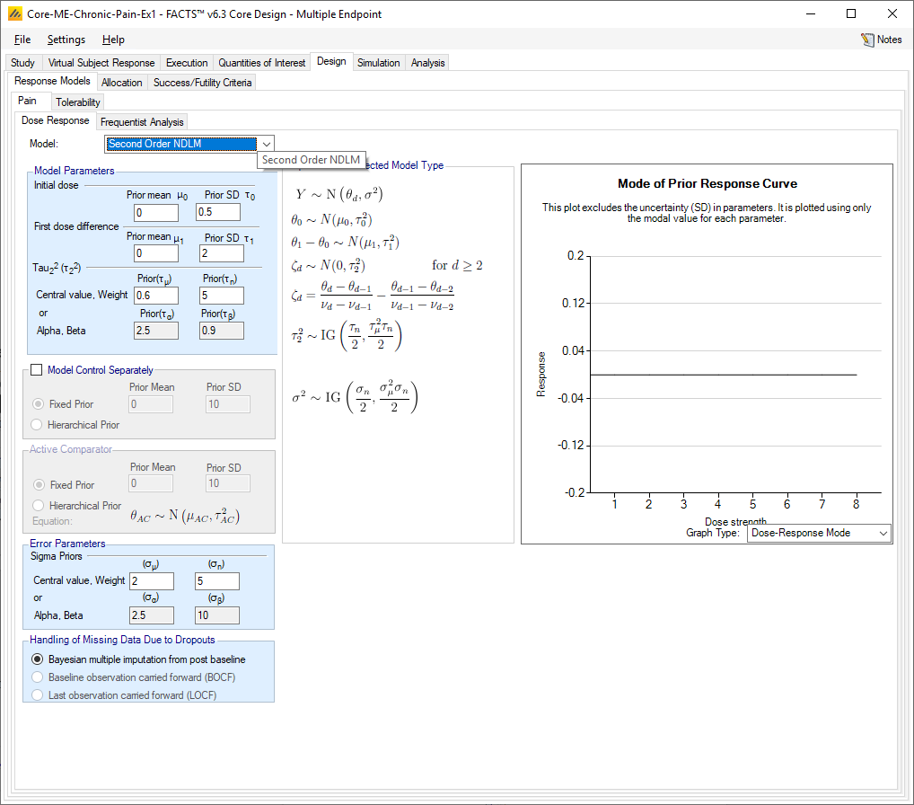

Dose Response
We wish the design to be able to cope with non-monotonic dose response data for the primary endpoint, so we model the primary continuous endpoint using the Second Order NDLM.
We assume the dose strengths give a linear range of doses in terms of the expected change in dose effect, so they are given dose levels of 0, 1, 2, ..., 8 and control is included in the model as the first dose
If the response for the ith subject given dose d at week 6 is Y6i:
\[Y_{6i} \sim N\left(\theta_d, \sigma^2\right) \text{ for } d = 0,1,\ldots,8\]
We set the prior for the initial dose:
\[\theta_0 \sim N\left(0, 0.5^2\right)\]
The scenarios all use a control rate of 0, so a mean of 0 for the prior seems reasonable. An SD of 0.5 means that the +/- 2SD prior interval is (-1,+1) so any actual rate within that range should see little effect from this prior in the posterior estimate, whereas an observed rate outside that range will see some bias towards 0 in the posterior estimate. The SD of the endpoint is 2.12 (variance 4.5) so this prior (variance 0.25) is roughly equivalent to 18 observations with a sample mean of 0. As we will be simulating typically 50 subjects in control this will contribute some additional shrinkage to the final estimate of the response on control. It will contribute a considerably greater proportionate effect at early interims with a lot less actual data. Exploring how useful this is in this example is left the reader, it is very easily done by making a slight change to this example and re-running the simulations.
Prior for the First dose difference:
\[\theta_1 - \theta_0 \sim N\left(0, 2^2\right)\]
Here we use a weakly informative, conservative prior, the mean of the prior is that there is no change in response from the Control to the first dose. An SD of 2 means that the +/- 2SD prior interval is (-4,4). All our expected changes are well inside this range – the maximum difference of any dose from control is ~1.7 and the SD of the endpoint is 2.12.
The next two prior distributions use the Inverse Gamma distribution, these can be specified in FACTS using one of two parameterizations – either the “Alpha, Beta” parameterization which is the more normal parameterization for statisticians, or the “Central value and Weight” parameterization. It is easier with the latter form to discuss the likely impact of the prior so this is the form that will be used here. The FACTS “Settings” menu command can be used to select the form you use. See “Settings > Options > Gamma Distribution Parameters”.
The 2nd Order NDLM smoothing parameter \(\tau^{2}\) is similar to one of those variance parameters of a hierarchical distribution, and as the data being modeled is the change in dose response between doses the number of actual observations in this case to 7 and the prior can play an important role. If we have strong prior that this is a small value, the 2nd order NDLM will tend to a straight line (extreme smoothing) and if we have a strong prior that this is a large value, the 2nd order NDLM will tend to simple pairwise comparison (no smoothing). Thus if we weight the prior to a small value we can reduce type 1 error – as the Null case is a flat straight line, but at the expense of underestimating the dose response at doses where there are large changes in response from one dose to the next.
Initial simulations were run with prior mean and weight of 1 and 0.1. For this parameter this gave an average for the posterior mean of 0.43 with and SD over the simulations of 0.1 and an average SD of the posterior estimate over the simulations of 0.26. However on the Emax scenario we saw the smoothing cause a biased under estimate of the response on the first dose of -0.22. (~22%) so we strengthened the prior for tau at a slightly higher value choosing a mean of 0.6 and a weight of 5.
\[\tau^2 \sim IG\left(0.6, 5\right)\]
This marginally reduced the bias at the first dose in the Emax scenario to -0.19. This prior could be further refined by exploring the error and bias of the response estimates across the scenarios at different prior means and weights – particularly at the key doses.
For the nuisance parameter \(\sigma\) we specified a prior with a mean of 2 close to the scenario mean and weight of 5 – equivalent to 5 observed subjects - so in the posterior estimate, the prior will be quickly dominated by the observed data. With a well research endpoint it would be not usual to have a strong prior expectation for the value of this parameter.
\[\sigma^{2}\sim IG(2,5)\]
Set the following parameters:
Select Model: Second Order NDLM
For the initial dose set the prior mean to be 0 and standard deviation to be 0.5
For the first dose difference, set the prior mean to be 0 and standard deviation to be 2
For the “smoothing factor”, tau2 (τ2) set the prior mean to be 0.6 with weight of 5.
Set Error Parameters: Sigma prior mean to be 2, and with weight of 5
Control is not modeled separately
